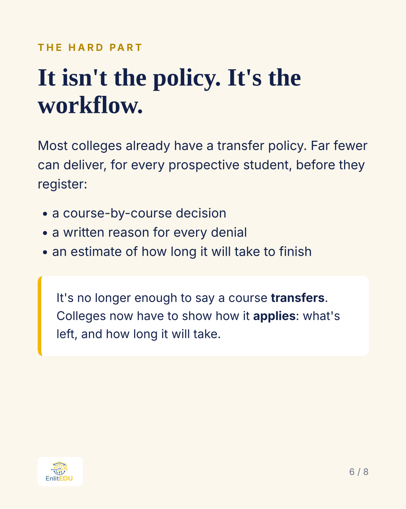

Key takeaways
- The U.S. Department of Education published the Accreditation, Innovation, and Modernization (AIM) final rule on October 30, 2026 (91 FR 68626). It takes effect July 1, 2027.
- For undergraduate programs, colleges must award transfer credit for comparable coursework from an institution accredited by a recognized agency, or give the student a written reason specific to each course.
- Credit can’t be denied because of the institution where the coursework was completed or the agency that accredits it, as long as that agency is recognized by the Secretary.
- Students get 15 calendar days to appeal a denial after receiving the college’s written notice.
- When a transcript arrives on time, the college must tell the student in writing which credits it will and won’t award, and the estimated time and courses needed to replace the rest, before the student signs an enrollment agreement, registers or makes a nonrefundable payment.
- Accreditors confirm that institutions’ transfer policies meet these requirements during accreditation reviews.
For years, transfer students have asked colleges one simple question: “Will my credits count?” Too often, the honest answer has been “We’ll let you know,” sometimes weeks later, often after the student has already registered or paid.
That’s about to change. Most of the headlines about the AIM rule are about accreditation. But tucked inside is one of the most significant transfer credit reforms in decades, and it takes effect July 1, 2027.
What is the AIM rule?
The Accreditation, Innovation, and Modernization (AIM) rule is a U.S. Department of Education final rule (Docket ED-2026-OPE-1042, RIN 1840-AD82) that revises 34 CFR Parts 600, 602 and 668. It was published in the Federal Register on October 30, 2026 as document 2026-22174. Most of the rule changes how the Secretary recognizes accrediting agencies, implementing Executive Order 14279, Reforming Accreditation to Strengthen Higher Education. It also rewrites the transfer of credit requirements in 34 CFR 602.24(e) and the transfer disclosures colleges must make under 34 CFR 668.43.
The Department proposed the rule earlier in 2026 (91 FR 53940) and received 7,051 public comments before publishing the final version.
What does the new federal transfer credit rule require?
In plain terms, here is what colleges will need to do, and where each requirement sits in the regulations.
| Requirement | What it means for your office | Regulation |
|---|---|---|
| Award comparable credit, or explain why not | For undergraduate programs, award credit for coursework successfully completed at an institution accredited by a recognized agency when it is comparable in content and learning outcomes to your own courses, unless you give a written basis for denial grounded in your academic standards or curricular requirements. | 34 CFR 602.24(e)(4) |
| A written reason for every denied course | If you decline to award credit, the student receives a written rationale specific to each course that does not transfer. | 34 CFR 668.43(c)(4) |
| Don’t deny credit because of where it came from | A course can’t be rejected because of the institution where it was completed or the agency that accredits that institution, as long as the agency is recognized by the Secretary. | 34 CFR 602.24(e)(3) |
| A right to appeal | Students can appeal a denial within 15 calendar days of receiving your written notification. | 34 CFR 602.24(e)(5) |
| Tell students before they commit | When a student provides a transcript on time, tell them the credit you will award, the credit you decline to award, and the estimated time and, when applicable, courses needed to replace what didn’t transfer. This goes to the student in writing (email counts) by the earlier of signing an enrollment agreement, completing registration or making a nonrefundable financial commitment. | 34 CFR 668.43(c)(3) and (c)(5) |
| Publish the rules | Your public transfer of credit policy must include the timeline for submitting a transcript for timely review, your transfer criteria, any types of institutions or sources you won’t accept credit from, your articulation agreements, written criteria for credit for prior learning (including military service), and whether you consider non-degree or non-credit work. | 34 CFR 668.43(a)(11) |
| Weigh comparability and applicability | Your transfer criteria must consider both the comparability and the applicability of coursework completed elsewhere. | 34 CFR 602.24(e)(2) |
Accreditors will check. Under 602.24(e), an accrediting agency must confirm, as part of its review for initial accreditation, preaccreditation or renewal, that the institution’s transfer of credit policies include these provisions.
When does the new transfer credit rule take effect?
The rule is effective July 1, 2027. The Department designated all sections for early implementation beginning January 1, 2027, but accrediting agencies that adopt provisions early may not impose new requirements on institutions that take effect before July 1, 2027.
July 2027 is closer than it looks, especially with budgets and implementations planned a year ahead.
Does the rule mean colleges must accept every transfer credit?
No. The award requirement covers coursework that is comparable in content and learning outcomes to the institution’s own courses, and a college can still decline credit with a written, course-specific basis tied to its academic standards or curricular requirements. In its response to comments, the Department said institutions “must retain academic discretion to evaluate comparability and applicability of coursework.” What changes is that every denial now needs a documented reason, a notice to the student and an appeal path.
Why it matters: 1.8 million transfer students a year
According to the Department’s regulatory impact analysis, 1.8 million title IV students transferred institutions between the 2023-24 and 2024-25 award years. About 60% of them received federal student aid in the year they transferred, a total of $8.8 billion at their new institutions, or roughly $8,300 per transfer student.
Every one of them deserves to know what their past work is worth before they invest in what comes next.
The hard part isn’t the policy. It’s the workflow.
Most colleges already have a transfer policy. Far fewer have a process that can deliver all of this for every prospective student, before they register:
- a course-by-course decision
- a written reason for every denial
- an estimate of how long it will take to finish
That last requirement is the one to underline. It’s not enough to say a course transfers. Colleges now have to show how credit applies: what’s left, and how long it will take. During the comment period, several commenters urged the Department to distinguish transferability (whether a course can be accepted for credit) from applicability (whether accepted credit applies to specific degree requirements). The final rule effectively asks colleges to answer both.
For registrars and transfer offices already stretched thin, doing this manually at scale will be very hard.

What colleges can do now: five places to start
- Map your current workflow. How long does a transfer evaluation take today, from transcript to decision?
- Audit your denial reasons. Could you give every student a specific written reason today?
- Set your transcript deadline. Decide what “timely” means for your institution, and publish it. Your public policy has to state this timeline under 668.43(a)(11)(i); the Department chose not to set a single federal deadline.
- Test your degree applicability. Can you tell a prospective student how many terms they have left before they enroll?
- Plan for appeals. Who reviews them, and how will you meet the 15-day window?
Related reading: why transfer credit takes weeks, and how to fix it, state transfer policies across the U.S. and giving students the “will my credits transfer?” answer early.
A personal note from Chaitanya Saripalli
As someone who built my own path through education, often far from home, I know what it means to have your past effort recognized, or not. This rule puts students’ time and money at the center of the transfer conversation, where it belongs.
Chaitanya, Founder & CEO of EnlitEDU, shared this analysis on LinkedIn. Read the original article, see the carousel, or follow her on LinkedIn and compare notes. Her question for registrars: what part of compliance worries you most?
How LioraAI helps colleges get ready
At EnlitEDU, we built LioraAI to give students instant, clear answers about their credits, with staff approving every decision. LioraAI Transfer Credit Intelligence reads each incoming transcript, matches courses to your catalog using your own transfer rules and past decisions, and gives evaluators a recommendation to approve, edit or flag. Every decision carries its evidence and approver, which is the raw material for course-by-course notices and written denial reasons. Approved credit posts to your SIS without re-keying.
It is already in use: Roane State Community College cut transcript evaluation from 72 hours to less than 5 minutes, Nashville State Community College brought transcript evaluation to less than 10 minutes, and the Tennessee Board of Regents has selected LioraAI for 11 community colleges that are preparing for what’s ahead.
Software doesn’t make an institution compliant on its own. Your transfer policy, transcript deadline and appeal process are still yours to set. LioraAI makes it practical to apply them to every transcript, on time.
The AIM transfer rule in 8 slides
Chaitanya’s LinkedIn carousel summarizes the rule. Select a slide to open it full size.
Sources
- U.S. Department of Education, Accreditation, Innovation, and Modernization: The Secretary’s Recognition of Accrediting Agencies; Institutional Eligibility Under the Higher Education Act of 1965, as Amended; Student Assistance General Provisions, final rule, 91 FR 68626, October 30, 2026 (FR Doc. 2026-22174). Official PDF (govinfo).
- Amended regulations: 34 CFR 602.24(e) (transfer of credit policies) and 34 CFR 668.43(a)(11) and (c) (institutional disclosures), as set out in the final rule.
- Implementation dates: Section IV, “Implementation Date of These Regulations,” and transfer data from the regulatory impact analysis (Table 3.1), final rule public-inspection copy.
- Chaitanya Saripalli, The New Federal Transfer Rule Changes the Question Colleges Have to Answer, LinkedIn, November 19, 2026.
- Chaitanya Saripalli, The New Federal Transfer Rule: What Colleges Need to Know (8-slide carousel), LinkedIn, November 19, 2026.
This article explains a federal regulation for general information. It is not legal advice; confirm your obligations with your compliance office or counsel.
Frequently asked questions
The Accreditation, Innovation, and Modernization (AIM) rule is a U.S. Department of Education final rule published October 30, 2026 (91 FR 68626, FR Doc. 2026-22174). It revises accreditation regulations and rewrites the transfer of credit requirements in 34 CFR 602.24(e) and 668.43.
July 1, 2027. Accrediting agencies may implement provisions early from January 1, 2027, but they cannot impose new requirements on institutions that take effect before July 1, 2027.
No. For undergraduate programs, colleges must award credit for coursework that is comparable in content and learning outcomes to their own courses, unless they give a written, course-specific basis for denial grounded in their academic standards or curricular requirements.
Students must have the opportunity to appeal within 15 calendar days of receiving the institution’s written notification that it declined to award transfer credit, under 34 CFR 602.24(e)(5).
If a student provides a transcript on time, the college must tell the student in writing which credits it will award, which it declines to award, and the estimated time and courses needed to replace them, by the earlier of signing an enrollment agreement, completing registration or making a nonrefundable financial commitment.
No. Under 34 CFR 602.24(e)(3), transfer credit cannot be denied based on the institution where the coursework was completed or the agency that accredits it, as long as that agency is recognized by the Secretary.
No single federal deadline. Each institution must publish the timeline by which a transcript must be submitted for timely review, so a prospective student can decide before enrolling, registering or paying.
Accrediting agencies. As part of initial accreditation, preaccreditation or renewal reviews, an agency must confirm that the institution’s transfer of credit policies meet 34 CFR 602.24(e).
Transferability is whether a course can be accepted for credit. Applicability is whether accepted credit counts toward specific degree requirements. The AIM rule requires transfer criteria to consider both.